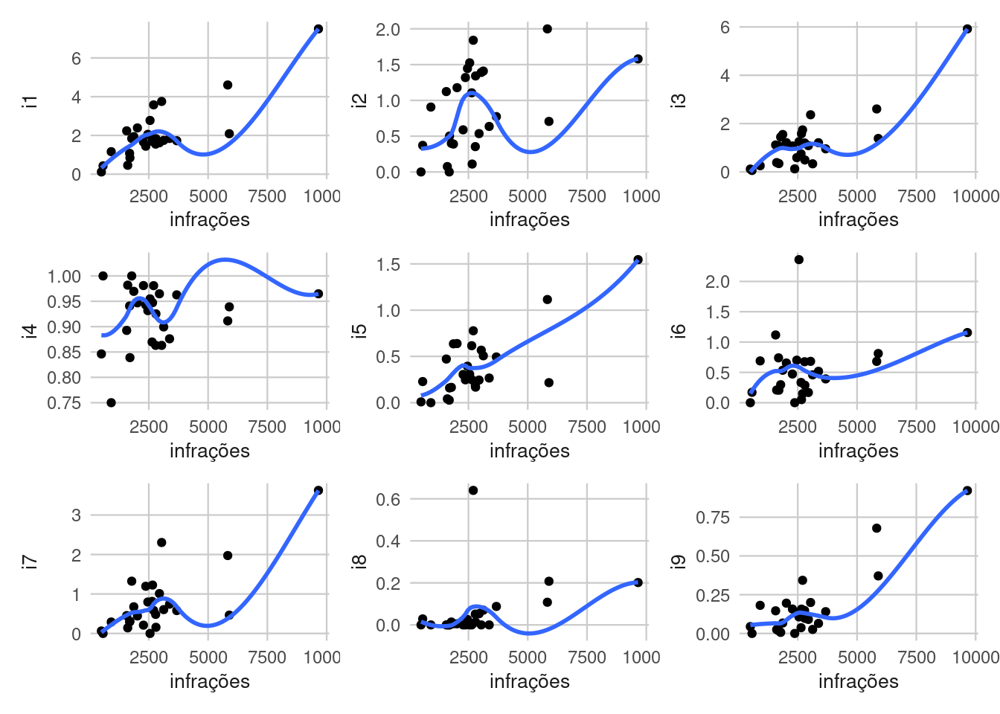
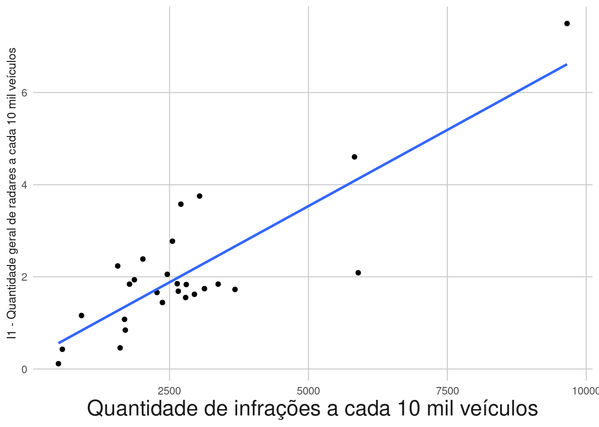
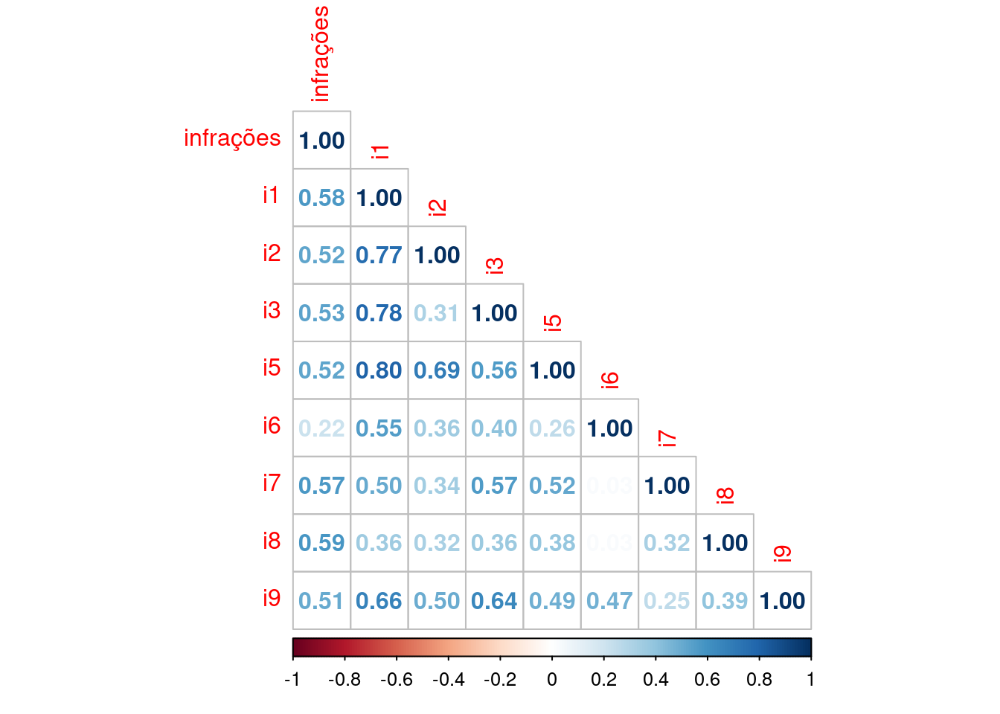
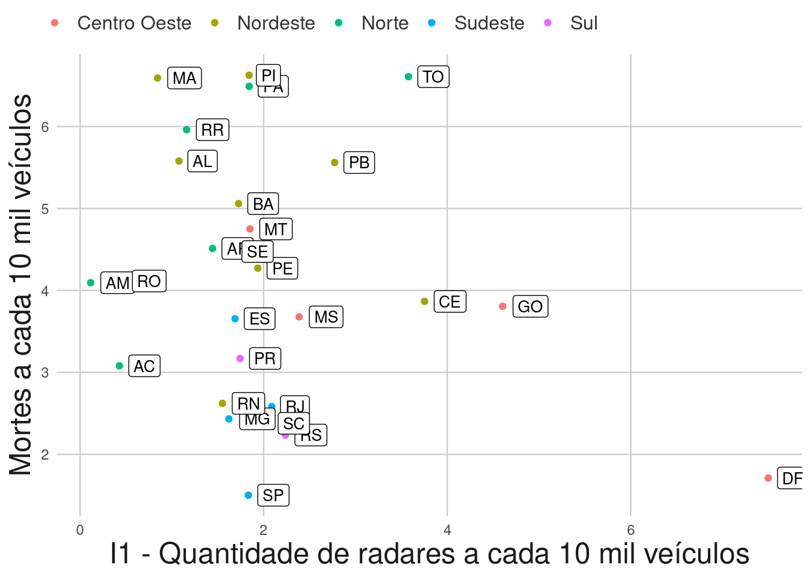

Capítulo 6 Correlações
6.1 Bibliotecas
Foram utilizadas diversas bibliotecas nessa seção, sendo elas:
library('readxl') #ler arquivo xlsx excel
library('tidyverse') # plotar gráficos e utilizar o pipe
library('patchwork') # plotar gráficos juntos
library('onsvplot') # usar o tema de gráfico do onsv
library('corrplot') # fazer o correlograma
# devtools::install_github("pabsantos/roadtrafficdeaths")
# devtools::install_github("jotasaraiva/fleetbr")
library('roadtrafficdeaths') # dados sobre mortalidade no trânsito
library('fleetbr') # dados sobre a frota de veículos6.2 Importando os dados e manipulando estruturas
Foi importado os dados relativos as infrações e retirado a linha “BR”, além de renomear a coluna relativo ao indicador de infrações. Com isso foi feito uma união com o Data Frame criado no capítulo 2 e trocado onde havia NA por 0.
infrações <- read_xlsx("/home/silvana/Downloads/INDICADORES_RADARES_VELOCIDADE_UF (indicador velocidade, infrações, mortalidade)).xlsx", sheet = 7)
infrações <- infrações[-7,] #excluindo a linha "BR"
infrações <- rename(infrações, infrações = `infrações/10000 veículos`)
Indicador_radares <- rename(Indicador_radares, UF = SiglaUf) #Esse data frame vem do script "Indicadores radares_frota.R"
rad_inf <- full_join(infrações[,c(1,4)], Indicador_radares, by = "UF")
rad_inf <- rad_inf %>%
mutate_all(replace_na, 0)6.3 Gráficos
Foi feito então um gráfico geral para avaliar a correlação visual entre os indicadores radar/frota e o indicador de infrações.
ggplot(data = rad_inf)+
geom_point(mapping = aes(x= infrações , y = i1))+
geom_smooth(mapping = aes(x= infrações , y = i1), se = FALSE)+theme_onsv()+
ggplot(data = rad_inf)+
geom_point(mapping = aes(x= infrações , y = i2))+
geom_smooth(mapping = aes(x= infrações, y = i2), se = FALSE)+theme_onsv()+
ggplot(data = rad_inf)+
geom_point(mapping = aes(x= infrações, y = i3))+
geom_smooth(mapping = aes(x= infrações, y = i3), se = FALSE)+theme_onsv()+
ggplot(data = rad_inf)+
geom_point(mapping = aes(x= infrações , y = i4))+
geom_smooth(mapping = aes(x= infrações, y = i4), se = FALSE)+theme_onsv()+
ggplot(data = rad_inf)+
geom_point(mapping = aes(x= infrações , y = i5))+
geom_smooth(mapping = aes(x= infrações , y = i5), se = FALSE)+theme_onsv()+
ggplot(data = rad_inf)+
geom_point(mapping = aes(x= infrações, y = i6))+
geom_smooth(mapping = aes(x= infrações, y = i6), se = FALSE)+theme_onsv()+
ggplot(data = rad_inf)+
geom_point(mapping = aes(x= infrações , y = i7))+
geom_smooth(mapping = aes(x= infrações , y = i7), se = FALSE)+theme_onsv()+
ggplot(data = rad_inf)+
geom_point(mapping = aes(x= infrações, y = i8))+
geom_smooth(mapping = aes(x= infrações, y = i8), se = FALSE)+theme_onsv()+
ggplot(data = rad_inf)+
geom_point(mapping = aes(x= infrações , y = i9))+
geom_smooth(mapping = aes(x= infrações, y = i9), se = FALSE)+theme_onsv()
Mas por fim foi adicionado no relatório apenas o gráfico de I1 vs infrações.
ggplot(data = rad_inf)+
geom_point(mapping = aes(x= infrações , y = i1))+
geom_smooth(mapping = aes(x= infrações , y = i1), se = FALSE, method = "lm")+
theme_onsv()+
labs(x = "Quantidade de infrações a cada 10 mil veículos", y="I1 - Quantidade geral de radares a cada 10 mil veículos")+
theme(axis.title.x = element_text(size =18),axis.title.y = element_text(size =10))
Nesse arquivo bookdown eu tive que diminuir o tamanho da legenda do eixo “y” para 10 pois não estava “cabendo” no gráfico, mas no relatório foi utilizado a fonte 18 para o eixo “y” (o mesmo tamanho da fonte do eixo “x”)
6.4 Correlograma entre indicadores radar/frota e indicador infrações
Foi feito um cor.test() em todos os casos para verificar se são estatísticamente correlacionados:
cor.test(rad_inf$infrações, rad_inf$i1, method = 'spearman')
cor.test(rad_inf$infrações, rad_inf$i2, method = 'spearman')
cor.test(rad_inf$infrações, rad_inf$i3, method = 'spearman')
cor.test(rad_inf$infrações, rad_inf$i4, method = 'spearman')
cor.test(rad_inf$infrações, rad_inf$i5, method = 'spearman')
cor.test(rad_inf$infrações, rad_inf$i6, method = 'spearman')
cor.test(rad_inf$infrações, rad_inf$i7, method = 'spearman')
cor.test(rad_inf$infrações, rad_inf$i8, method = 'spearman')
cor.test(rad_inf$infrações, rad_inf$i9, method = 'spearman')Com isso ficou nítido que o I4 não possui correlação algumas com as infrações e o I6também poderia ser excluido se considerassemos um p-valor<0.05.
Após esse teste, foi feito o gráfico de correlação geral:
graf_corr <- cor(rad_inf[,c(-1,-6)], method = "spearman")
corrplot(graf_corr, type = "lower", method = "number") 
## Correlação entre infrações e mortalidade
Para esse correlação foi feito um ajuste na base de dados do DataSus e teve de ser criado um tibble(um Data Frame evoluído) sobre as regiões das unidades da federação, classificando cada unidade da federação na sua respectiva região. Fazendo então a união de três bases, a base de mortalidade, a base de infrações e a base das regiões.
rtdeaths_2022<- filter(rtdeaths,rtdeaths$ano_ocorrencia == 2022)
rtdeaths_2022 <- rtdeaths_2022 %>%
group_by(rtdeaths_2022$nome_uf_ocor) %>%
summarise(
quantidade = n()
)
rtdeaths_2022 <- rtdeaths_2022[-28,]
rtdeaths_2022 <- mutate(rtdeaths_2022, UF = c("AC", "AL", "AP", "AM", "BA", "CE", "DF", "ES", "GO", "MA", "MT",
"MS", "MG", "PR", "PB",
"PA", "PE", "PI", "RN", "RS", "RJ", "RO", "RR", "SC", "SE", "SP", "TO"))
rtdeaths_2022 <- rename(rtdeaths_2022, Estado = `rtdeaths_2022$nome_uf_ocor`)
fleet_2022 <- filter(fleetbr, mes == 12, ano == 2022, modal == "TOTAL")
rtdeaths_fleet <- inner_join(rtdeaths_2022, fleet_2022, by = c("UF" = "uf"))
rtdeaths_fleet <- mutate(rtdeaths_fleet, A_cada_10_mil = (quantidade*10^4)/frota)
rad_inf2 <- subset(rad_inf, select = infrações)
cor.test(rad_inf2$infrações,rtdeaths_fleet$A_cada_10_mil, method = "spearman")##
## Spearman's rank correlation rho
##
## data: rad_inf2$infrações and rtdeaths_fleet$A_cada_10_mil
## S = 3108, p-value = 0.7992
## alternative hypothesis: true rho is not equal to 0
## sample estimates:
## rho
## 0.05128205##
## Spearman's rank correlation rho
##
## data: rad_inf$i1 and rtdeaths_fleet$A_cada_10_mil
## S = 3796, p-value = 0.4274
## alternative hypothesis: true rho is not equal to 0
## sample estimates:
## rho
## -0.1587302mort_ind <- rtdeaths_fleet %>%
inner_join(rad_inf, by = "UF")
regioes <- tibble(UF = c("RS","SC","PR","SP","MG","RJ","ES","MS","MT","GO","DF","BA","SE","AL","PE","PB","RN","CE","PI","MA",
"TO","PA","AP","RR","RO","AM","AC"),
Regiao = c("Sul","Sul","Sul","Sudeste","Sudeste","Sudeste","Sudeste","Centro Oeste","Centro Oeste",
"Centro Oeste","Centro Oeste","Nordeste","Nordeste","Nordeste","Nordeste","Nordeste","Nordeste",
"Nordeste","Nordeste","Nordeste","Norte","Norte","Norte","Norte","Norte","Norte","Norte"))
mort_ind <- mort_ind %>%
inner_join(regioes, by = "UF")Note também que foi feito um teste de correlação, e ele já indicou que não há tal correlação, mas mesmo assim podemos tirar insights visuais do gráfico feito abaixo:
ggplot(data = mort_ind)+
geom_point(mapping = aes(x = i1, y = A_cada_10_mil, color = Regiao))+
geom_label(aes(x = i1, y = A_cada_10_mil, label = UF), size = 3.5, hjust = -0.3)+
theme_onsv()+
labs(x = "I1 - Quantidade de radares a cada 10 mil veículos", y = "Mortes a cada 10 mil veículos")+
theme(axis.title.x = element_text(size =18),
axis.title.y = element_text(size =18),
legend.text = element_text(size =12))